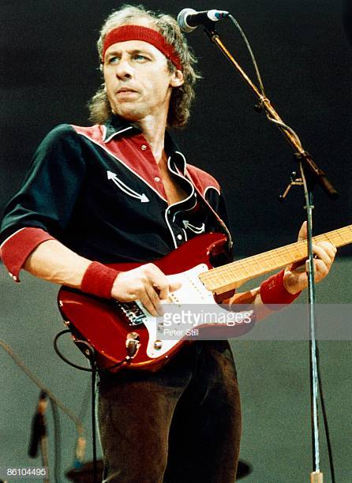
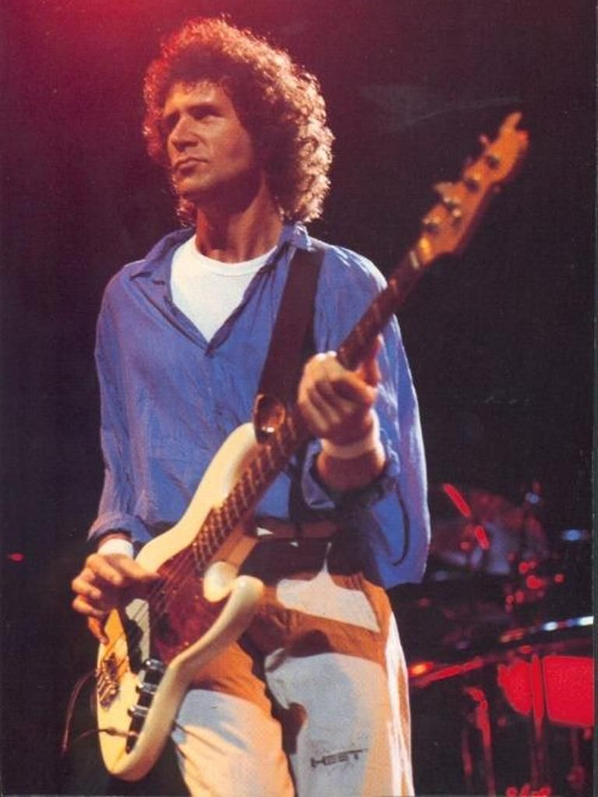
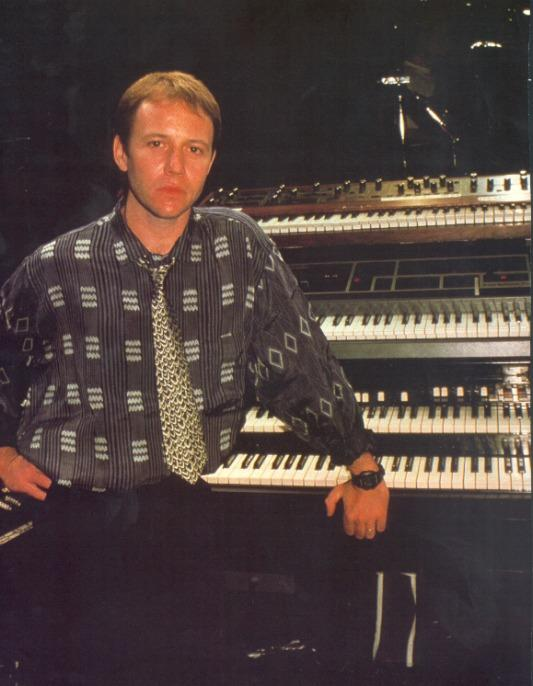

Mark KnopflerMark Freuder Knopfler (Glasgow, Escocia, 12 de agosto de 1949) es un músico de sesión, guitarrista, productor discográfico, cantante y compositor escocés. Antes de su carrera como músico, trabajó de periodista y dio clases en la universidad. Principalmente conocido como fundador, guitarrista y cantante de la banda Dire Straits y su singular estilo con la guitarra sin púa, está considerado como uno de los músicos más importantes de la historia del rock. También ha tocado en otras bandas (Notting Hillbillies, Brewer's Droop), para otros artistas (Bob Dylan en Slow Train Coming entre otros), participó en dos discos de Phil Lynott Solo in Soho y The Philip Lynott Album) y ha realizado proyectos en solitario. Además, ha compuesto música para varias películas, incluyendo Local Hero, Comfort and Joy, Cal, La princesa prometida, Last exit to Brooklyn, La Cortina De Humo (Wag the dog), Metroland y A shot at glory y para otros cantantes como Tina Turner, Private Dancer. Actualmente lleva una carrera en solitario, con un estilo un tanto diferente al que creó con Dire Straits, basado en un estilo propio, mezcla de diversas fuentes como el blues, el rock y el folk. La revista Rolling Stone lo sitúa en el puesto 44º de la lista de los 100 guitarristas más grandes de todos los tiempos. |
 |
|  |
John IllsleyJohn Illsley (Leicester, Inglaterra, Reino Unido, 24 de junio de 1949) es un músico británico. Bajista y miembro fundador de la banda de rock Dire Straits. Su toque tremendamente rítmico y su aspecto desgarbado hicieron de John Illsley el integrante de Dire Straits más reconocible por el gran público tras Mark Knopfler. Gracias a la fama alcanzada por la banda, John consiguió publicar dos discos en solitario (Never Told A Soul, 1984 y Glass, 1988) a la vez que formaba parte de los Dire Straits, sin lograr ninguno de ellos excesiva repercusión. |
Alan ClarkAlan Clark (5 de marzo de 1952, Great Lumley, Inglaterra, Reino Unido) es un músico inglés. Teclista de la banda de rock Dire Straits. Desde muy pequeño, Alan Clark estudió piano; tocando en distintos clubs y asociaciones. A pesar de tener la opción de ingresar en el Guildhall School of Music, Clark lo rechazó al tener un trabajo estable como músico en el Carousel Casino Club en Chester-le-Street. Posteriormente, trabajó en distintos cruceros; lo que le llevó a vivir en Miami durante un tiempo. De regreso en Reino Unido, Clark tocó como músico de concierto para distintos grupos; entre ellos Lindisfarne. Dire Straits estaban a punto de publicar su tercer álbum, titulado Making Movies, en 1980. Con Making Movies, Dire Straits orientaban su carrera hacia un rock más complejo y desarrollado (las discusiones entre los hermanos Knopfler por la dirección del grupo provocarían la partida de David del mismo). Como consecuencia de la búsqueda de una mayor complejidad musical, la banda incorporó un teclista que no había tenido hasta entonces. En el estudio de Making Movies, fue Roy Bittan (de la E Street Band) el que interpretó los teclados como músico de sesión. Justo tras la publicación del álbum, Clark pasó a formar parte de la banda (participando en la gira del mismo). Su primera aparición en un disco de estudio de la banda fue Love Over Gold en 1982. Continuó siendo parte de la banda hasta su disolución en 1995. |
 |